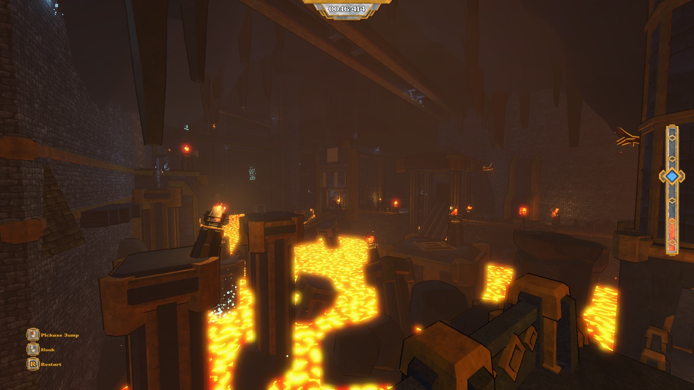
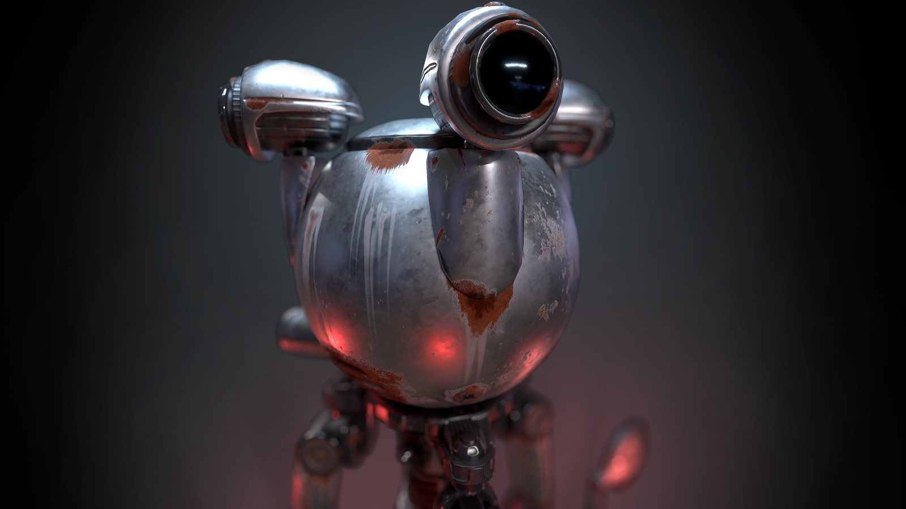
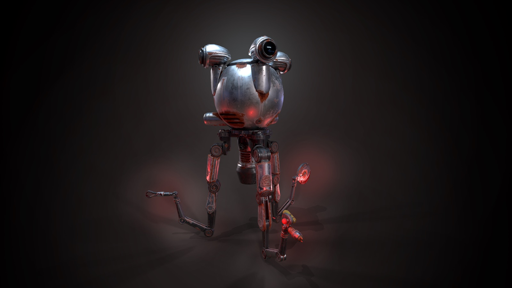
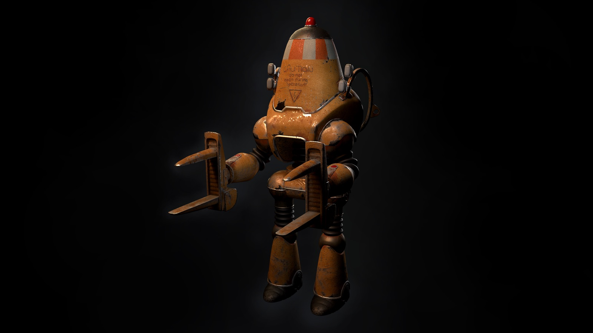
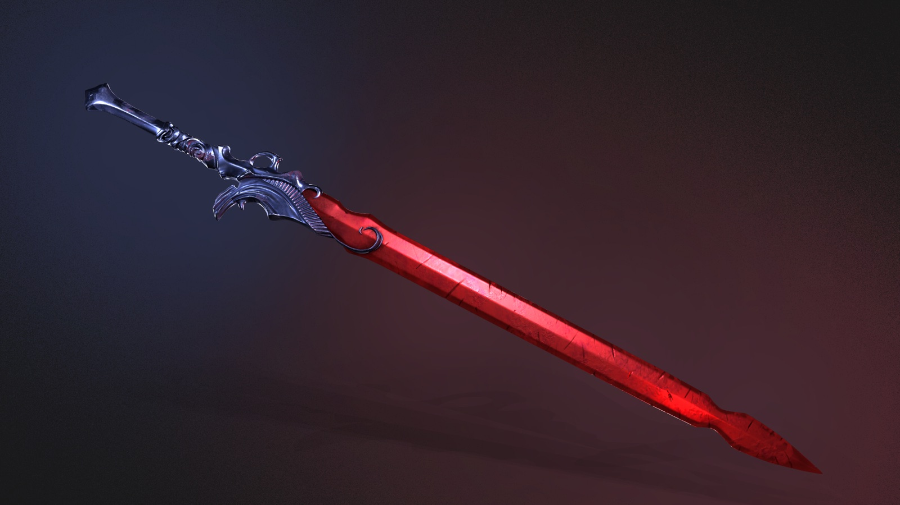
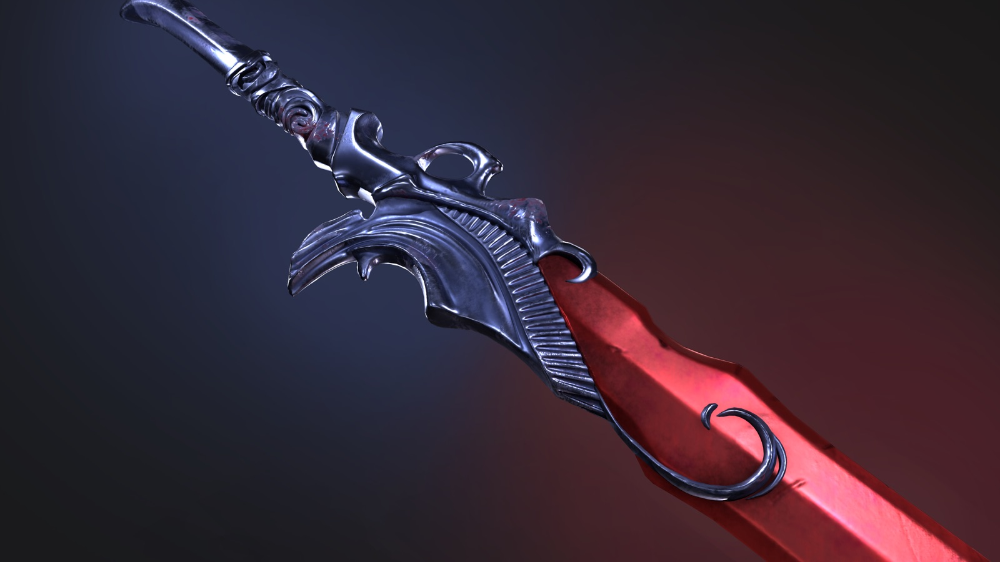

Engineering
Pipedrive — Junior Software Engineer
Subscription billing — a domain where one subscription can carry discounts, scheduled changes and a legacy plan at once, and every combination has to stay correct across the product, the invoice and the data warehouse.
Took a capability spanning four services from an open-ended brief to production, alone — a Kafka consumer on a company-wide event topic, two service endpoints, an allowlist — then kept improving it after release, shipping three hardening changes driven by what production traffic exposed. Scoped and led a five-person cross-functional mission, every other member senior to me, and wrote the architecture decision record behind it; a later decision record built on that one.
Also: the platform for running pricing experiments across ~20 countries — assigning a company to a variant and keeping that decision consistent everywhere it surfaces — and two authored Claude Code skills for my team's workflow.
On the team's support rotation I diagnosed a live production error from logs, mitigated it the same day and filed the follow-up fix — and chose a rollback over a Friday forward-fix when the risk didn't justify shipping.
Frontend
TypeScript · React · Redux Toolkit · React Query · micro-frontends
Backend
Node.js · Fastify · REST APIs · MySQL · Apache Kafka · Docker
Graphics & Games
Godot 4 · GDShader / GLSL · C++ / raylib · Blender · Maya · TrenchBroom
Practice
Feature flags · gradual rollout · production support · Jest, Cypress · CI/CD · AI-assisted development
Projects
Dwarf Escape
A first-person platformer set in a dwarven mine — a pickaxe jump, a grappling hook, and a timer running in the corner. I made the environment art and the materials: the cave and architecture geometry, the tileable rock and brick textures, and the lava that lights most of the level.
We showcased it twice at game-dev expo events and ran tournaments on it.


Wolf-Hunter
A 2D action game written directly on raylib, with no engine underneath. Everything is hand-rolled: tile collision, enemy state machines, two weapon systems with combo timers and projectiles, a dodge roll with invulnerability frames, and binary save/load. The art and the Tiled maps are mine too.
It is the project where I found out what an engine actually does for you, by not having one.
3D art
Four years of 3D alongside everything else. Hard-surface modelling and sculpting, UV unwrapping, baking, and texturing — both hand-painted and realistic PBR. These are personal pieces rather than game assets.





